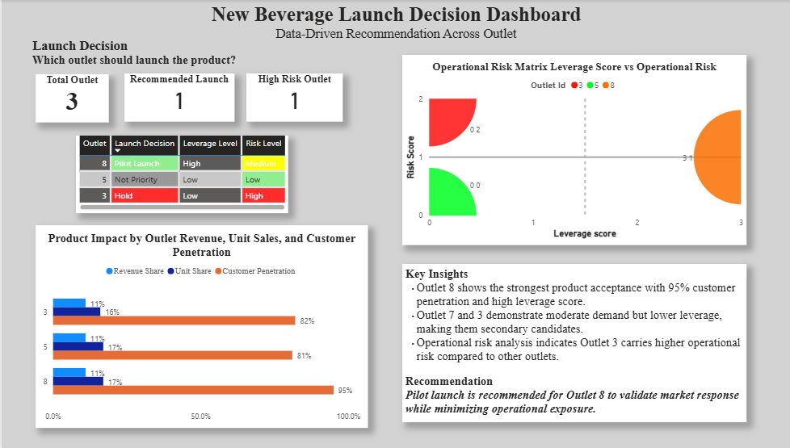

A data-driven decision matrix — leverage score × operational risk — built from multi-outlet transaction data to recommend where to pilot a new beverage launch.
Key results
The dashboard
Built in Power BI to turn the outlet comparison into a single, stakeholder-ready view: a launch-decision table, a leverage-vs-risk matrix, and a product impact breakdown per outlet.

New Beverage Launch Decision Dashboard — Power BI
The problem
A multi-outlet coffee chain wanted to launch a new beverage but needed to know where to pilot it first. The obvious shortcut — pick the outlet with the highest revenue — rewards outlets that are already doing well, without accounting for how risky that launch actually is operationally.
The real question wasn't "which outlet sells the most," but "which outlet shows the strongest demand signal while carrying the least operational risk."
Approach
order_active view joining transaction, product, and outlet data into one clean source of truth for every downstream query.Pilot recommendation
Of the 3 outlets evaluated, Outlet 8 reached 95% customer penetration — clearly ahead of Outlet 3 (82%) and Outlet 5 (81%) — alongside a High leverage score, while carrying only Medium operational risk.
Outlet 3 showed moderate demand but the highest operational risk of the three, landing it a "Hold" decision rather than an outright launch. Outlet 5 scored low on both leverage and risk, making it a low-priority candidate for now. Plotting leverage against risk — instead of ranking outlets by revenue or demand alone — is what surfaced Outlet 8 as the outlet with the best demand-to-risk trade-off for a first pilot.
Challenges & solutions
Raw POS exports were three separate transaction, product, and staff tables with no single "active order" view to query against.
Built order_active as a SQL view joining all three tables, so every downstream query — product, gender, staff — started from one clean, consistent source.
New-product rows were mixed into aggregate product totals, inflating the apparent performance of the existing catalog.
Filtered new_product_yn = 'N' when building baseline product performance, isolating proven catalog sales from early-stage new-product uptake before comparing outlets.
Ranking outlets by demand alone would recommend a launch site without accounting for how risky that launch actually is to operate.
Replaced single-metric ranking with a two-axis decision matrix — leverage score vs. operational risk — classifying each outlet as Pilot Launch, Hold, or Not Priority instead of just picking the top performer.
Key learnings
A single "top performer" metric hides risk — plotting leverage against operational risk surfaces candidates that are strong and safe, not just strong.
High demand and high risk can show up in the same outlet (Outlet 3) — treating those as separate axes instead of one blended score keeps the trade-off visible instead of averaged away.
Separating new-product rows from core-catalog performance early prevents an overly optimistic read when the actual decision at hand is about launching something new.
Doing the heavy joins and aggregation in SQL views (order_active, detail_product) kept the Power BI data model simple — most of the logic lives upstream, not in DAX.
Tech stack